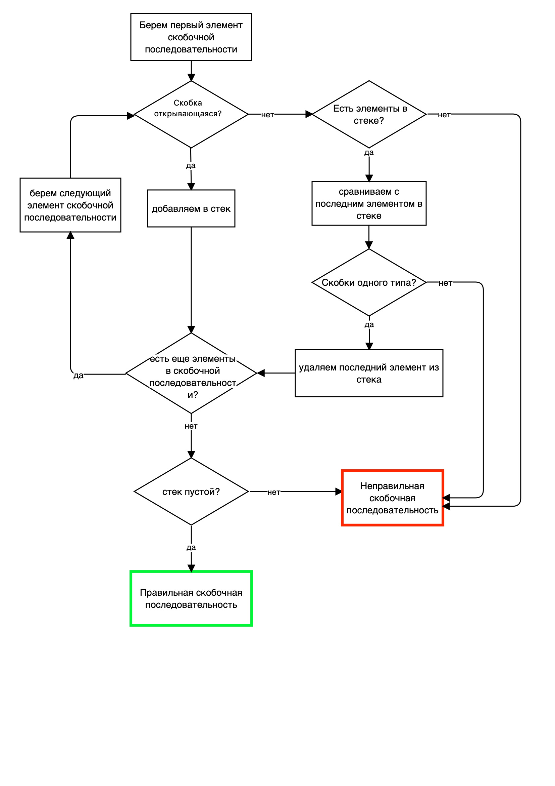

Чтобы скобочная последовательность считалась правильной, она должна соответствовать следующим критериям:
- Пустая строка является правильной скобочной последовательностью.
- Пустая строка заключенная в скобки одного типа, так же является правильной скобочной последовательностью. Например: ( )
- Для каждой открывающейся скобки есть пара в виде закрывающейся скобки того же типа. Например: ( ), { }, [ ]
- Скобки должны закрываться в правильном порядке. Например: ( ( ) ) - правильный порядок, ( [ ) ] - неправильный порядок.
- Скобочная последовательность, которая начинается с открытой скобки, является априори неправильной. Например: ) ( ( ) - неправильная скобочная последовательность.
Возьмем скобочную последовательность из задания: [ ( ( ( ) ) ( ) ( ( ) ) ] ]
Для того, чтобы узнать является ли данная скобочная последовательность правильной, можно постепенно удалять из нее те скобки, которые закрываются в правильном порядке и принадлежат одному типу. В результате удаления, должна получиться пустая строка, которая является правильной скобочной последовательностью
[ ( ( ( ) ) ( ) ( ( ) ) ] ]
[ ( ( ) ( ) ] ]
[ ( ] ] - открытая и закрытая скобка принадлежат к разным типам, поэтому данная скобочная последовательность не является правильной.
2. Чтобы скобочная последовательность считалась правильной, можно предпоследнюю квадратную скобку заменить на закрывающуюся круглую,
[ ( ( ( ) ) ( ) ( ( ) ) ] ] ==> [ ( ( ( ) ) ( ) ( ( ) ) ) ]
либо вторую круглую скобку заменить на закрывающуюся квадратную
[ ( ( ( ) ) ( ) ( ( ) ) ] ] ==> [ [ ( ( ) ) ( ) ( ( ) ) ] ]
В случае, написания алгоритма, необходимо применить другой порядок действий.
Для того, чтобы узнать является ли данная скобочная последовательность правильной, необходимо воспользоваться перебором. Перебор следует осуществлять следующим способом. Для этого нам понадобиться стек, в который мы будем добавлять и удалять скобки. Алгоритм должен выглядеть следующим способом:
